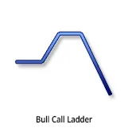
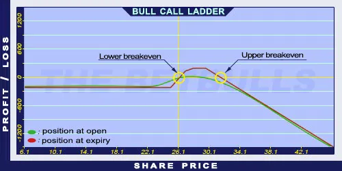

Description and use

A Bull Call Ladder is a version of Bear Call Spread, but there is an extra Short Call involved with a higher strike price. This way the position is unlimited when share prices are rapidly increasing. It is a spread strategy, because it consists of a Long and a Short position. It is also a vertical strategy, because the bought and sold options have different strike prices. The investor speculates on neutral or increasing market prices. This strategy should be used when the trader is not totally sure about the direction of the market. The strategy is a net debit investment. It is also a neutral strategy, because it is not clear whether it is increasing or decreasing. The direction of the market is determined by the function of the share price and the first strike price. The investor expects the share price to close between the middle and the higher strike price. It is ideal anywhere within that range. Short-term options should be traded, because the increasing share prices result an unlimited risk. When the share price is below the lower strike price, the position will generate losses. When the share price is between the middle and the higher strike prices, the position will generate profit. However, when the share price is above the higher strike price, the position will generate (unlimited) losses again. Because of the extra component, there are both lower and Upper breakeven points.
- Type: Neutral
- Transaction type: Debit
- Maximum profit: Limited
- Maximum loss: Unlimited
- Strategy: Vertical spread
Opening the Position
Bull Call Ladder Option Positions
- Buy low-strike Call options.
- Sell middle-strike Call options (same quantity and maturity as the other Call options’).
- Buy high-strike Call options (same quantity and maturity as the other Call options’).
Steps
Entry:
- Make sure the trend is inclining or stagnating at a certain level.
Exit:
- When the share price is above the Stop Loss, sell the Long Call option and close the positions (if it is not possible to hold naked Call options).
Basic Characteristics
- Maximum loss: Unlimited
- Temporary loss: Net debit.
- Maximum profit: Middle strike price - Lower strike price - Net debit.
- Time decay: Time decay has a positive effect on the value if the share price is around the lower strike price. This positive effect is enhanced if the share price is around the higher strike price.
- Lower breakeven point: Lower strike price + Net debit.
- Upper breakeven point: (Higher strike price + Medium strike price - Lower strike price) - Net debit.
Advantages and Disadvantages
Advantages:
- The costs are lower and the breakeven points are lower than for the Bull Call Spread strategy.
Disadvantages:
- It can result higher returns with higher strike prices, but the share prices must increase above those high strikes.
- It has an upper limit when share prices are increasing.
- It has no limit when share prices are decreasing.
Closing the Position
Buy back the Short options and sell the Long options.
Mitigation of Losses
Close the position the above-mentioned way.
Example

Bull Call Ladder strategy example with ABCD traded for $26.10 on 14.05.2017. The investor engages in the following:
- Buy a Long Call option with a strike price of $25.00, expiring in June 2017, for a premium of $1.60.
- Sell a Short Call option with a strike price of $27.50, expiring in June 2017, for a premium of $0.20.
- Sell another Short Call option with a strike price of $30.00, expiring in June 2017, for a premium of $0.10.
- Net debit: $1.30
- Temporary risk: $1.30
- Maximum loss: Unlimited
- Maximum profit: $1.20
- Lower breakeven point: $26.30
- Upper breakeven point: $31.20